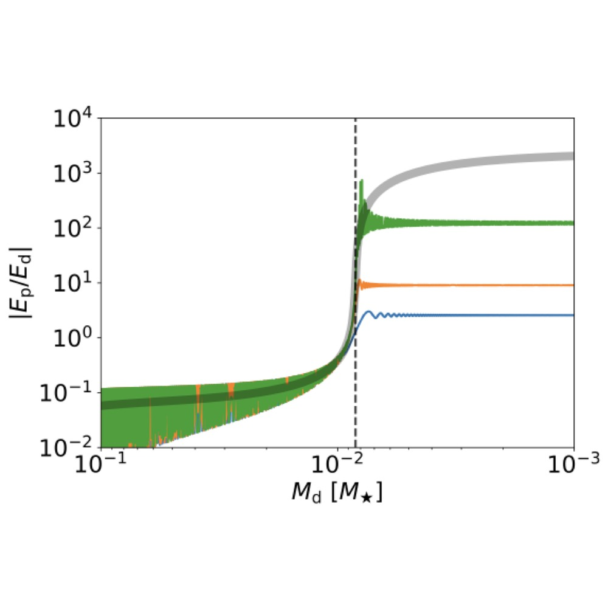

I am a theoretical astrophysicist working on various problems in orbital dynamics and disk hydrodynamics, using a combination of analytical modelling, semi-analytical calculations, and large-scale numerical simulations.
My work sits at the intersection of orbital dynamics and gas dynamics — the question of how gravity and gas together sculpt the architectures we observe, from compact multi-planet systems to the inner regions of AGN disks.

Dynamics of planetary systems
Planet–planet scattering, collisions and mergers, the spins and obliquities of merger remnants, and how resonant chains are broken.
As the disk disperses (mass falling to the right), the planet sweeps through a secular resonance and its eccentricity jumps by orders of magnitude; curves are different dispersal timescales. From Li & Lai (2023).
Protoplanetary disks
Eccentric modes and instabilities that form rings without planets, secular resonances that excite planetary eccentricity, and warped disks from the linear regime through to breaking.
Concentric rings emerging through an eccentric cooling instability, with no planet present. From Li, Dempsey, Li & Li (2021).
Black holes in AGN disks
How stellar-mass black holes embedded in AGN disks meet, capture one another, and harden into merging binaries.
A close encounter in an AGN disk, where the collision of the black holes’ circum-single disks can leave the pair bound. From Li, Dempsey, Li, Lai & Li (2023).